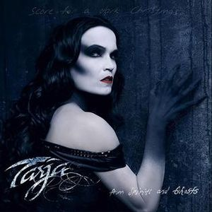
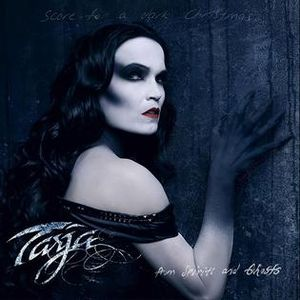
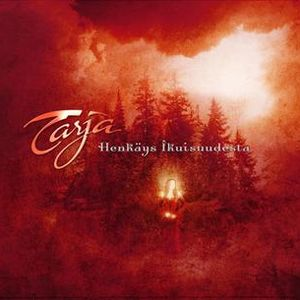
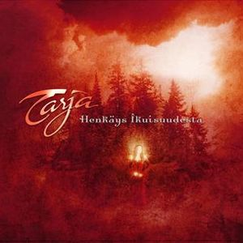

Tarja Soile Susanna Turunen Cabuli (17 de agosto de 1977) é uma cantora e compositora finlandesa que
ficou mundialmente conhecida como a primeira vocalista e membro fundadora da banda de metal
sinfônico Nightwish, entre 1996 e 2005. Atualmente ela segue em carreira solo e é considerada uma
das melhores cantoras de seu estilo, sendo reconhecida e também tendo recebido a designação por Doro
Pesch como uma das sucessoras ao título de "Rainha do Metal".Tarja ainda colaborou em carreira solo
com grandes nomes da música como o compositor alemão vencedor do Óscar, Hans Zimmer, as bandas
Scorpions e Angra, o músico Chad Smith do Red Hot Chilli Peppers, Within Temptation, a atual
vocalista do Nightwish, Floor Jansen, Doro Pesch, Mike Oldfield e também o brasileiro Kiko Loureiro
do Megadeth, ex-membro do Angra. Tarja começou sua carreira musical em 1996 quando fundou a banda
Nightwish ao lado de Tuomas Holopainen e Emppu Vuorinen; ela cantou na banda até 2005, quando foi
demitida em uma carta aberta à imprensa.
Já em dezembro daquele ano, Tarja iniciou uma turnê de concertos natalinos que se estendeu até o fim
de 2006, quando ela lançou seu primeiro álbum solo, um projeto natalino chamado Henkäys
Ikuisuudesta. Em 2007, Tarja lançou um novo disco, My Winter Storm, seu primeiro trabalho solo de
metal que foi sucedido por What Lies Beneath em 2010. Mais tarde em 2013, é lançado seu quarto disco
de estúdio, Colours in the Dark, e em 2015 o clássico Ave Maria - En Plein Air. No ano seguinte,
Tarja lançou dois álbuns de estúdio, The Brightest Void e The Shadow Self, cujas temáticas e
conceitos são interligados.
Carreira
O primeiro lançamento solo de Tarja foi um single natalino em 2004, "Yhden Enkelin Unelma", que
chegou a Disco de Platina na Finlândia e ao primeiro lugar nas paradas musicais tanto em 2004
quanto em 2005.
Após sua demissão do Nightwish, Tarja ficou em pausa apenas durante um mês em Buenos Aires, pois
já em dezembro retomou sua carreira com uma turnê natalina que passou por quatro países da
Europa: Finlândia, Alemanha, Espanha e Romênia, onde neste último foi acompanhada pela Orquestra
Filarmônica de Sibiu.
Com uma carreira que continua a evoluir e surpreender, Tarja Turunen permanece uma figura influente e respeitada no mundo da música, encantando fãs com sua voz única e performances cativantes.
Album Solo
Tarja começou as gravações do seu primeiro álbum solo de metal, My Winter Storm, nos estúdios
Grouse Lodge, no interior da Irlanda, contando com a ajuda de um grupo de compositores e músicos
como Doug Wimbish e Earl Harvin. A produção do álbum levou a cantora aos estúdios do famoso
compositor de trilhas sonoras, Hans Zimmer, em Los Angeles, onde o álbum ganhou seus últimos
arranjos para, enfim, poder ser lançado em 19 de novembro de 2007 na Europa e 2 de janeiro de
2008 na América do Sul.
Após o lançamento de "My Winter Storm", Tarja Turunen continuou a lançar álbuns solo que ganharam destaque e consolidaram sua carreira como artista solo. Em 2010, ela lançou "What Lies Beneath", um álbum que recebeu elogios por sua produção sofisticada e pela performance vocal de Tarja. O álbum inclui faixas como "I Feel Immortal" e "Until My Last Breath", que se tornaram favoritas dos fãs.
Em 2013, Tarja lançou "Colours in the Dark", um álbum que explorou uma variedade de estilos musicais e mostrou a versatilidade da cantora. O álbum foi bem recebido pela crítica e incluiu singles como "Victim of Ritual" e "500 Letters".
Outro álbum notável é "The Shadow Self", lançado em 2016. Este álbum foi precedido por um álbum complementar, "The Brightest Void", lançado no mesmo ano. "The Shadow Self" foi elogiado por sua profundidade emocional e complexidade musical, com faixas como "Innocence" e "Demons in You" destacando-se.
Em 2019, Tarja lançou "In the Raw", um álbum que combinou elementos de metal sinfônico com um som mais cru e pesado. O álbum foi bem recebido e incluiu faixas como "Dead Promises" e "Tears in Rain".
Projetos Paralelos
Em projetos paralelos, em 2006, Tarja começou a trabalhar com alguns músicos finlandeses que
algum tempo depois saíram em turnê com ela para concertos de música clássica.Essas apresentações
continuaram em 2009 e 2010, e em 12 de agosto de 2011, Tarja anunciou que ela, junto com o
pianista Kalevi Kiviniemi, o guitarrista Marzi Nyman e o baterista Markku Krohn, haviam criado o
grupo Harus, que em 17 de novembro de 2011, lançou um DVD chamado In Concert – Live at Sibelius
Hall, gravado na Finlândia no ano anterior.
Descrição Musical
Tarja começou a ter aulas de canto lírico aos 15 anos, quando frequentou a Academia Musical
de Savonlinna, na Finlândia, focando nesse estilo; sua professora, em seguida, a ajudou a se
especializar como soprano. Mais tarde ela estudou na Academia de Sibelius, mas, após entrar
para o Nightwish, não teve mais tempo para os estudos. Em janeiro de 2001, Tarja foi
admitida em um conservatório na Alemanha (Hochschule für Musik Karlsruhe), e com o teste que
fez chamou a atenção da professora Mitsuko Shirai, que reconheceu que ela colocava muito
sentimento em suas interpretações. Tarja sempre cantou como uma cantora lírica, mas
confessou em entrevistas que no começo do Nightwish era difícil para ela combinar seu estilo
de voz com a música pesada da banda, mas que isso lhe permitiu brincar com sua voz e a
aprender a se controlar e se educar musicalmente.
Últimos Trabalhos
Nos últimos anos, Tarja Turunen tem se mantido ativa na cena musical com diversas turnês e colaborações. Em 2019, ela lançou seu oitavo álbum de estúdio, "In the Raw", que foi bem recebido pela crítica e pelos fãs. O álbum apresenta uma mistura de metal sinfônico com elementos mais crus e pesados, destacando a versatilidade vocal de Tarja.
Em termos de turnês, Tarja tem viajado pelo mundo com sua "Raw Tour", que começou em 2019 e continuou até 2020, antes de ser interrompida pela pandemia de COVID-19. Durante esse período, ela também participou de vários festivais de música e realizou shows especiais de Natal, uma tradição em sua carreira solo.
Além de sua carreira solo, Tarja tem colaborado com vários artistas e bandas. Em 2020, ela lançou um dueto com a cantora finlandesa Toni Turunen, intitulado "O Come, O Come, Emmanuel". Em 2021, ela participou do álbum "The Metal Opera" do projeto Avantasia, liderado por Tobias Sammet, contribuindo com sua voz poderosa em várias faixas.
Em 2022, Tarja lançou seu nono álbum de estúdio, "The Brightest Void", que serve como um prelúdio para seu próximo álbum, "The Shadow Self". Ambos os álbuns exploram temas de luz e escuridão, com "The Brightest Void" apresentando um som mais acessível e "The Shadow Self" mergulhando em territórios mais sombrios e introspectivos.
Discografia
Tarja Turunen lançou vários álbuns de estúdio ao longo de sua carreira solo, explorando uma variedade de estilos musicais e temas. Esses álbuns demonstram a evolução contínua de Tarja como artista solo e sua capacidade de inovar e surpreender seus fãs com cada novo lançamento. Seus álbuns incluem:


 


 
